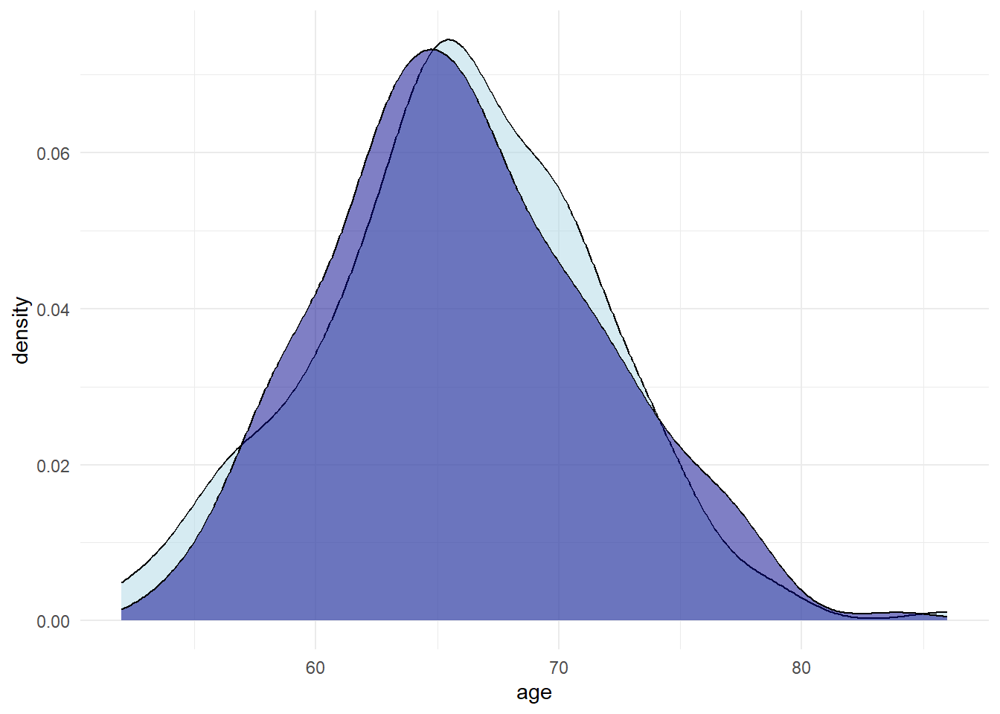

gesyn - Practical 1: Introduction to synthetic data
1 Introduction
Welcome to the first practical of the course! In this practical, we will work on the foundation of synthetic data generation: generative modelling. Specifically, we will work with the disease data, which consists of 232 patients of whom three variables are recorded:
status: whether the patient has survived (deceased,recovered);stay: how many days the patient has been hospitalized;age: the age of the patient.
We will work on creating a synthetic version of this data data set. However, before we start with generating data, we need to get a basic understanding of the data (just throwing a model at a data set is always a bad idea).
1. Install and load the required packages, and fix the state of the random number generator to ensure reproducibility of your results.
2. Download the disease data and load it into R.
2 Data exploration
3. Inspect the first few rows of the data using head().
4. Get descriptive statistics for this data set. How many people have recovered? And what is the average age in the sample?
Hint: You might want to use summary() or describe() from the psych() package.
status age stay
deceased : 42 Min. :52.00 Min. : 1.000
recovered:190 1st Qu.:63.00 1st Qu.: 2.000
Median :66.00 Median : 4.000
Mean :65.92 Mean : 6.612
3rd Qu.:70.00 3rd Qu.: 9.000
Max. :86.00 Max. :52.000 | vars | n | mean | sd | median | trimmed | mad | min | max | range | skew | kurtosis | se | |
|---|---|---|---|---|---|---|---|---|---|---|---|---|---|
| status* | 1 | 232 | 1.818966 | 0.3858793 | 2 | 1.897849 | 0.0000 | 1 | 2 | 1 | -1.6460623 | 0.7126484 | 0.0253342 |
| age | 2 | 232 | 65.922414 | 5.6171519 | 66 | 65.983871 | 5.9304 | 52 | 86 | 34 | 0.0243344 | 0.1571293 | 0.3687841 |
| stay | 3 | 232 | 6.612069 | 7.5412534 | 4 | 5.053763 | 2.9652 | 1 | 52 | 51 | 2.7291176 | 9.6124730 | 0.4951075 |
5. Visualize the distributions of the variables status, stay and age. What do you think of their distributions?
3 Generative models
We will now start with generating synthetic data. For the moment, we will focus on univariate modelling strategies, and forget for the moment that the relationships between variables are also important. We will focus on multivariate modelling at a later moment.
6. Generate 232 new samples from a binomial distribution.
Hint: Use rbinom() with size = 1, and prob set to the proportion of individuals who recovered.
7. Compare the distributions of the original status variable with your synthetic status variable. Are they comparable?
The counts are slightly different, but the difference is relatively small. It seems a realistic synthetic version of the original variable.
8. Do you think it is appropriate to generate a synthetic age variable from a normal distribution? Why or why not?
ggplot(disease, aes(x = age)) +
geom_density(fill = "lightblue") +
stat_function(fun = dnorm,
args = list(mean = mean(disease$age),
sd = sd(disease$age))) +
theme_minimal()# A normal distribution comes rather close to the original distribution of the
# variable age, so in terms of distributional similarity: yes, a normal
# distribution is appropriate. However, a normal distribution is real-valued,
# whether age is recorded as integer numbers only. Still, we can solve for this
# by rounding the generated age values.9. Generate 232 synthetic age values from a normal distribution, and round the sampled values.
Hint: You can use the function rnorm(), and borrow the mean and standard deviation from the original variable.
10. Compare the distributions of the original age variable with your synthetic age variable. Are they comparable?
ggplot(disease, aes(x = age)) +
geom_density(fill = "lightblue", alpha = 0.5) +
geom_density(aes(x = syn_age), fill = "darkblue", alpha = 0.5) +
theme_minimal()
The distributions are not identical, but indeed very similar, which is what we want.
11. Compare the distribution of the variable stay with a normal distribution, a lognormal distribution (i.e., the exponent of a normally distributed variable) and a Poisson distribution using the figure below. Which distribution is most appropriate?
OPTIONAL: If you have plenty of time left, program this comparison yourself. You can use ggplot() in combination with stat_function, using the functions dnorm, dlnorm and dpois. Pay close attention to the input arguments of these functions.
ggplot(disease, aes(x = stay)) +
geom_density(aes(col = "Observed")) +
stat_function(aes(col = "Normal"),
fun = ~dnorm(.x,
mean = mean(disease$stay),
sd = sd(disease$stay))) +
stat_function(aes(col = "Log-normal"),
fun = ~dlnorm(.x,
meanlog = mean(log(disease$stay)),
sdlog = sd(log(disease$stay)))) +
stat_function(aes(col = "Poisson"),
n = 71,
fun = ~dpois(.x, lambda = mean(disease$stay))) +
xlim(-15, 55) +
scale_color_brewer(palette = "Dark2", type = "div") +
theme_minimal()12. Generate a synthetic version of the variable stay by exponentiating all n = 232 values from a normal distribution. Again round the drawn values.
Hint: Because we exponentiate the values, we need to provide the mean and standard deviation on the log scale.
13. Compare the distributions of the original stay variable with your synthetic stay variable. Are they comparable?
14. Separate the data into two groups based on the variable status.
15. For each of these groups, estimate the means and covariance matrix of the two variables, age and stay. Again use log(stay).
means_deceased <- c("age" = mean(deceased$age),
"stay" = mean(log(deceased$stay)))
means_recovered <- c("age" = mean(recovered$age),
"stay" = mean(log(recovered$stay)))
var_deceased <- var(data.frame(age = deceased$age,
stay = log(deceased$stay)))
var_recovered <- var(data.frame(age = recovered$age,
stay = log(recovered$stay)))16. Use your previously created status variable, and for each of the two groups, draw synthetic values for age and stay.
Create a synthetic data set for the two groups separately. Draw these synthetic sets from a bivariate normal distribution, with the means and (co-)variances specified according to the just estimated values.
Hint: You can use rmvnorm from the mvtnorm-package.
syn_deceased <- rmvnorm(
n = sum(syn_status == "deceased"),
mean = means_deceased,
sigma = var_deceased
)
syn_recovered <- rmvnorm(
n = sum(syn_status == "recovered"),
mean = means_recovered,
sigma = var_recovered
)
syn <- bind_rows(
"deceased" = data.frame(syn_deceased),
"recovered" = data.frame(syn_recovered),
.id = "status"
) |>
mutate(
status = factor(status),
age = round(age),
stay = exp(stay) |> round()
)17. OPTIONAL: Compare the univariate distributions of the variables in your final synthetic data set with the distributions in the observed data. Also compare the correlations between the variables. How good is the synthetic data?
ggplot() +
geom_density(aes(x = disease$age, col = "Observed")) +
geom_density(aes(x = syn$age, col = "Synthetic"))ggplot() +
geom_density(aes(x = disease$stay, col = "Observed")) +
geom_density(aes(x = syn$stay, col = "Synthetic")) status age stay
status 1.0000000 0.3010599 -0.1313469
age 0.3010599 1.0000000 -0.0257513
stay -0.1313469 -0.0257513 1.0000000 status age stay
status 1.00000000 0.341287830 -0.060386533
age 0.34128783 1.000000000 -0.008524173
stay -0.06038653 -0.008524173 1.000000000